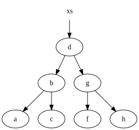

Use the space bar or arrow keys to browse the slide.
Functional Programming in Ruby
Frozen Rails, Helsinki
11/12 September 2014

@plexus
Programming Paradigms
Imperative Programming
State + Statements
Modeled after the machine
Evolutionary Steps
Procedural, group statements
Object Oriented, group state
Still imperative at heart
Place Oriented Programming
State is kept in “places”
Register, Memory, Variable
What’s in a place can change
Place Oriented Programming
Old information is overwritten with new
Done for efficiency
But facts don’t change, they incorporate time
{ date: '2014-09-10', temperature: 19 }
{ date: '2014-09-11', temperature: 17 }
Functional Programming
Modeled after mathematical functions
Based on human reasoning, not machine design
Functional Programming
Programming with Immutable Values
Can be “simple”: 42, :foo
Or composite, lists, sets, maps
Functional Programming
Programming with Pure Functions
Only relies on arguments, not on state
No observable side effects
Why Functional?
Functional programming goes a long way towards avoiding the problems of state-derived complexity. This has very significant benefits.
The main weakness of functional programming is that problems arise when the system to be built must maintain state of some kind.
Times Are Changing
1995 Ruby
2003 Scala
2005 F#
2007 Clojure
2012 Elixir
The future is functional/multi-paradigm
Multi-Paradigm
OOTTP: FP + Relational
Clojure: FP + Reference Types
Haskell: FP + Type System
Ruby: ?

FP in Practice
Composite Values


{kind=link}
{kind=link}
Functional Data Structures
Memory Efficient
Speed guarantees: typically O(log n)
Value semantics with minimal sacrifice
Skip the next part?
concurrency?
Dealing With Change
Programs are processes
They cause change over time
By overwriting old data OO loses sense of time
There is only “now”
Need to stop the world to get consistent data
Identities
Name given to a sequence of values that are causally related
There is always one value “current”.
Think of git branches
River = river04ca, river596d, river80e9, …
A way of explicitly managing state over time
OO conflates values and identities
Identities
(def river (atom
(for [_ (range 10)]
[(rand 100) (rand 100)])))
;; ([4.816 90.156] [32.374 33.889] ...)
(defn move-particle [[x y]]
[(+ 1 x) (+ (rand) y -0.5)])
(defn flow [r]
(map move-particle r))
(swap! river flow)
;; ([5.816 90.419] [33.374 34.177] ...)
(swap! river flow)
;; ([6.816 90.372] [34.374 33.938] ...)
Sanity through purity
Values + Pure Functions + Persistent Data Structures
These go hand in hand, you have to have all three
Not revolutionary in itself, but enables so much
Ruby
Some functional inspiration
Lambdas, blocks, map, reduce, freeze
But no functional culture
(Almost) everything is mutable
Gems
Immutable Structs
anima, concord, adamantium,
value_struct, value, values,
immutable_struct, immutable, attr_immutable,
value_object_struct, hamsterdam,
closed_struct, functional_accessor
class Ukulele
include Anima.new(:color, :tuning)
# def initialize(attrs)
# attr_reader :color, :tuning
# def ==(other)
# def eql?(other)
# def equal?(other)
end
u1 = Ukulele.new(color: 'green',
tuning: [:G, :C, :E, :A])
u2 = Ukulele.new(color: 'green',
tuning: [:G, :C, :E, :A])
u1 == u2 # => true
Gems
Hamster
Pure Ruby implementation of Vector, Set, Map, List
persitent-data-structures
Native implementation for JRuby
Clojr
Clojure data structures and reference types for JRuby
require 'hamster'
person = Hamster.hash(name: "Simon", gender: :male)
# => {name: "Simon", gender: :male}
person[:name]
# => "Simon"
person.get(:gender)
# => :male
friend = person.put(:name, "James")
# => {:name => "James", :gender => :male}
person
# => {:name => "Simon", :gender => :male}
Hamster.interval(10_000, 1_000_000).filter do |number|
prime?(number)
end.take(3)
# => 0.0009s
(10_000..1_000_000).select do |number|
prime?(number)
end.take(3)
# => 10s
Ruby
Increasingly people are programming in this style
But ecosystem is small and fragmented
Ruby Core cares very little
Time to move on?